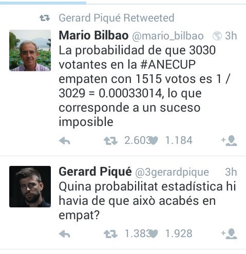
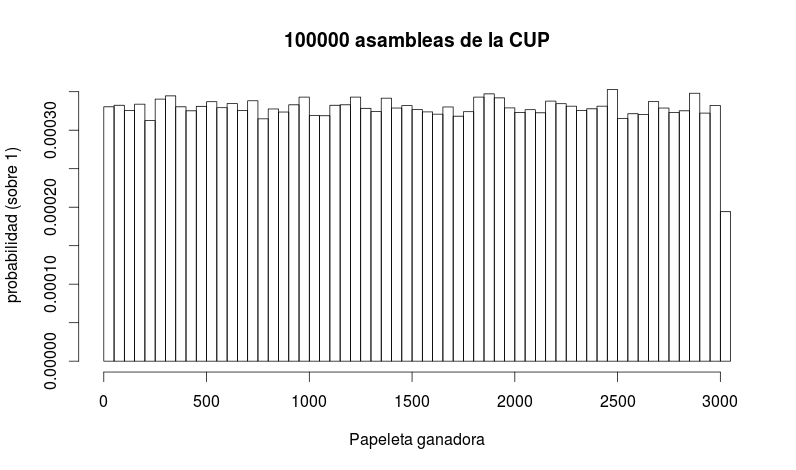
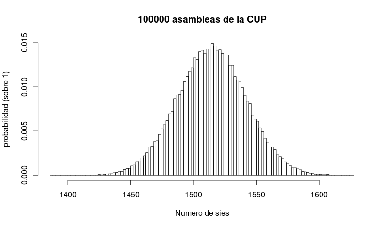
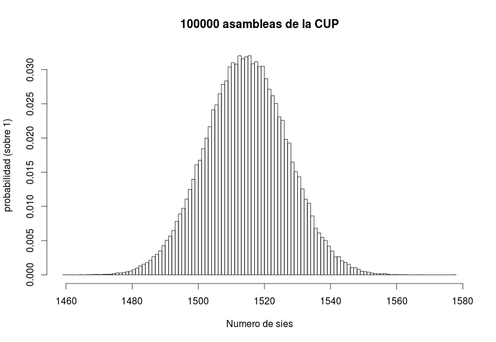

¿Cuál era la probabilidad de que la ultima votación de la asamblea de la CUP acabara en empate? Las reacciones van de la risa a la incredulidad paranoica. Algunos hasta se han animado con los cálculos con mayor o menor acierto e incluso a algún matemático afiliado al PP le han podido las prisas y ha calificado el resultado de imposible. El debate se ha dividido entre los que dicen que la probabilidad era de 0.033% y los que dicen que es de 1.4%.
El resumen de la historia es que la probabilidad de obtener 1515 síes era cercana al 1,4%, y que aún así era el número más probable (o al menos uno de los más probables).
Primero vamos con la versión del 0.033%, defendida por Salvador Cardús y Mario Bilbao, y luego iremos con la del 1.4% defendida en las redes por Roger Guimerà, Ricardo Gallir y Xavier Sala-i-Martí (que en frio dijo 0.033 pero luego corrigió).

Este modelo no tiene sentido. Los que defienden este porcentaje asignan la misma probabilidad a cualquiera de los resultados. Bajo este modelo, sería igual de factible el empate que un 100% de síes o que un 100% de noes. Este modelo es equivocado porque asume que el número lo decide Antonio Baños sacando una papeleta de una urna llena de papeletas numeradas del 1 al 3030.
Para demostrarlo, voy a simular a Antonio Baños por ordenador y voy a hacerle repetir el experimento en 100000 asambleas.
# Para reproducir este ejemplo, descargar el software (libre) de estadística R: https://cran.r-project.org/
# Un Antonio Banos
N <- 1
# una urna con 3030 papeletas numeradas
papeletas <- 1:3030
# Simula muchas, muchas asambleas
M <- 100000
asambleas <- data.frame(matrix(0,M,1))
names(asambleas) <- "papeleta"
for (i in 1:M){
asambleas[i,] <- sample(papeletas, N)
}
hist(asambleas$papeleta, breaks = 100, probability=TRUE,
xlab="Papeleta ganadora", ylab="probabilidad (sobre 1)",
main="100000 asambleas de la CUP")
# probabilidad de empate
empates <- sum(asambleas$papeleta==1515)
probabilidad_empate <- empates/M
cat("Probabilidad de empate:", probabilidad_empate*100)
donde la probabilidad de empate (y de cualquier otro resultado) sería de 1 sobre 3030 posibilidades, 1/3030, o un 0.033%. Lo cual, por cierto, no es imposible, de hecho es más que la probabilidad de que te toque el Gordo.
Pero la aburrida realidad es que Baños no se pone en bikini a sacar una papeleta de una urna sino que 3030 cupaires depositan un sí o un no. En este caso, la intución nos dice que algunos resultados extremos como 0 a favor y 3030 en contra son menos probables que 1000 a favor y 2030 en contra. Es decir, intuitivamente vemos que hay resultados más probables que otros. Matemáticamente decimos que no es una distribución uniforme.
Para ver como se distribute la probabilidad sobre los posibles resultados, esta vez simulamos 3030 cupaires participando en 100000 asambleas. Para simularlas tengo que imaginar un modelo sobre cómo se comporta cada cupaire individual. Dado que el debate estaba muy ajustado, los cupaires son parecidos a monedas lanzadas al aire.
# Para reproducir este ejemplo, descargar el software (libre) de estadística R: https://cran.r-project.org/
# N cupaires
N <- 3030
# con un debate muy ajustado
probabilitat_si <- 0.5
probabilitat_no <- 1 - probabilitat_si
# Simula muchas, muchas asambleas
M <- 100000
asambleas <- data.frame(matrix(0,M,2))
names(asambleas) <- c("sies", "noes")
for (i in 1:M){
votos <- sample(c("si", "no"), N, replace=TRUE, prob=c(probabilitat_si,probabilitat_no))
sies <- sum(votos=="si")
noes <- sum(votos=="no")
asambleas[i,] <- c(sies, noes)
}
hist(asambleas$sies, breaks = 100)
# probabilidad de empate
empates <- sum(asambleas$sies==1515)
probabilidad_empate <- empates/M
cat("Probabilidad de empate:", probabilidad_empate*100)
donde resulta que lo que tenemos es una distribución normal (la culpa es del Teorema del Límite Central) donde el número más frecuente es el 1515, que ha ocurrido un 1,47% de las veces. Sí, es poco probable, pero es el más probable.
Antoni-Ítalo propone asumir que el 80% de los cupaires ya venían decididos de casa y que sólo había un 20% de indecisos. Esto va a ser clave, ya que las posibilidades se van a reducir y por lo tanto las probabilidades serán mucho mayores para cada posible resultado. Repetimos la simulación:
# N cupaires
N <- 3030
# 80% ya llegan con el voto decidido.
si_fijos <- 1212 # 3030*0.4
no_fijos <- 1212 # 3030*0.4
indecisos <- N - si_fijos - no_fijos
# con un debate muy ajustado
probabilitat_si <- 0.5
probabilitat_no <- 1 - probabilitat_si
# Simula muchas, muchas asambleas
M <- 100000
asambleas <- data.frame(matrix(0,M,2))
names(asambleas) <- c("sies", "noes")
for (i in 1:M){
votos <- sample(c("si", "no"), indecisos, replace=TRUE, prob=c(probabilitat_si,probabilitat_no))
sies <- sum(votos=="si") + si_fijos
noes <- sum(votos=="no") + no_fijos
asambleas[i,] <- c(sies, noes)
}
hist(asambleas$sies, breaks = 100)
hist(asambleas$sies, breaks = 100, probability=TRUE,
xlab="Numero de sies", ylab="probabilidad (sobre 1)",
main="100000 asambleas de la CUP")
# probabilidad de empate
empates <- sum(asambleas$sies==1515)
probabilidad_empate <- empates/M
cat("Probabilidad de empate:", probabilidad_empate*100)
donde ahora la probabilidad de empate sube al 3.187%.
En cualquier caso, estamos asumiendo que el voto de un cupaire no afecta el voto de otro cupaire y estamos obviando dinámicas sociológicas de grupo, el efecto de las corrientes internas y una serie de fenómenos que podrían hacer el empate incluso más probable (o menos). Pero no hay duda de que la probabilidad estaba más cerca del 1.4% que del 0.03%.